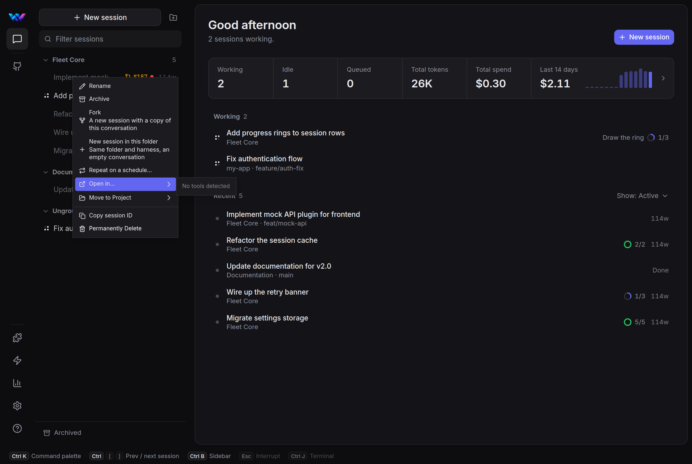
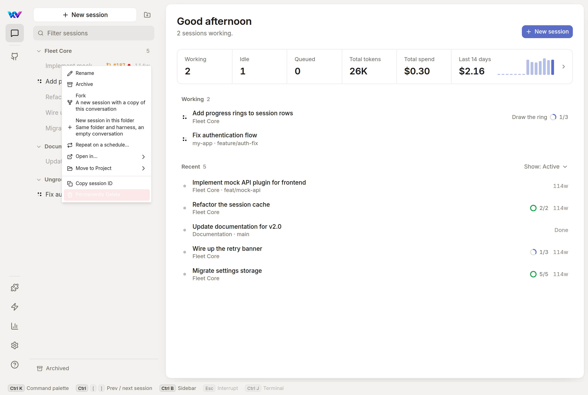

The session and project menus use shadcn's stock ContextMenu classes. Fleet's own menus (the composer chips, model picker, command palette) were styled later and look different. Below, the menu as it is today, then three options. Every option uses Fleet's real tokens and works in every theme (switch themes at the top right).
Each panel is live: right-click any session row to open the menu there. Hover the rows, open the submenus, and use the arrow keys, Enter and Esc.
What ships now
Rebuilt from the classes in components/ui/context-menu/*.vue. Real screenshots from mock-mode Fleet are underneath.
Why it feels out of place
- Square corners. Every other Fleet surface is rounded (10 px cards, 8 px buttons). The menu panel has no radius.
- Solid accent hover.
focus:bg-accentresolves to Fleet's indigo, so the highlighted row is a bright block. Everywhere else, Fleet's hover is a soft text tint. - Delete is unreadable. It uses
text-destructive-foreground, which is white. In the light theme it is white on pale pink on hover; in dark themes it isn't red at all. - Rows wrap to three lines. The Fork and New session explanations wrap inside a 224 px menu, so rows are uneven.
- Small, flat, one long list. 12 px type (Fleet menus use 13 px), 11 items with one divider, and a thin
shadow-mdthat barely lifts it off the sidebar. - Mixed wording. “Move to Project”, “Permanently Delete”, “Open in...” with three dots next to “Repeat on a schedule…”.
- Broken submenu when empty. “No tools detected” opens as a loose grey box.


Fleet restyle
Same items in the same order. Only the look changes, so it matches Fleet's chip menus (.ns-pop / .ns-option).
What changes
- 10 px rounded panel on the raised surface, with a deeper, softer shadow so it lifts off the sidebar.
- Hover is a 7% text tint and the icon brightens. Accent colour is kept for meaning only (the check on the current project).
- 13 px type, 30 px rows, 14 px icons in a fixed column so labels line up.
- Explanations stay, but on one line each; the menu is 264 px wide.
- Delete is red, with a red-tinted hover, in every theme.
- Sentence case and real ellipses: “Move to project”, “Delete permanently…”, “Open in”.
- 120 ms fade-and-settle when it opens, from the cursor.
Cost
Smallest change. Edit the classes in the context-menu primitives (and the matching dropdown-menu ones, so ⋯ menus match), plus the label text. Every context menu in Fleet updates at once.
Restyle + grouped, with a hint line
RecommendedA's look, plus structure. Related actions are grouped, every row is one line, and the explanation for the highlighted row appears in a quiet footer.
What changes, on top of A
- Five groups: change this session · start from it · reuse it · take it elsewhere · delete. You scan groups instead of reading 11 rows.
- One line per row. Fork's and Save as workflow's explanations (and the reason when Fork is off) move into the footer. The footer follows the highlighted row and otherwise shows the session's folder and branch.
- Shortcut chips in the same style as the status bar. Only F2 (Rename) exists today, so only that one is shown.
- Move to project shows a check next to the current project instead of a greyed-out row.
- Rows that only sometimes appear (Restore, Move out of parent) join the first two groups.
Cost
A, plus reordering SessionItem.vue's menu and a small ContextMenuHint slot that reads the highlighted row's description. The project menu gets the same grouping.
Session header + quick actions
B, plus the session's name, status and branch at the top, and the four most-used verbs as a strip of buttons. It reads more like a small Fleet card than a system menu.
What changes, on top of B
- The header confirms which session you right-clicked, which helps when titles are cut off in a narrow sidebar.
- Rename, Fork, Archive and Copy ID are one click in a strip; the list holds the rest.
Trade-offs
- Taller menu, and the header repeats the row you just clicked.
- The button strip is a new pattern that no other Fleet menu uses, and with the keyboard it's a second set of things to move between.
Cost
B, plus a session-only header component. Other menus stay as in B.